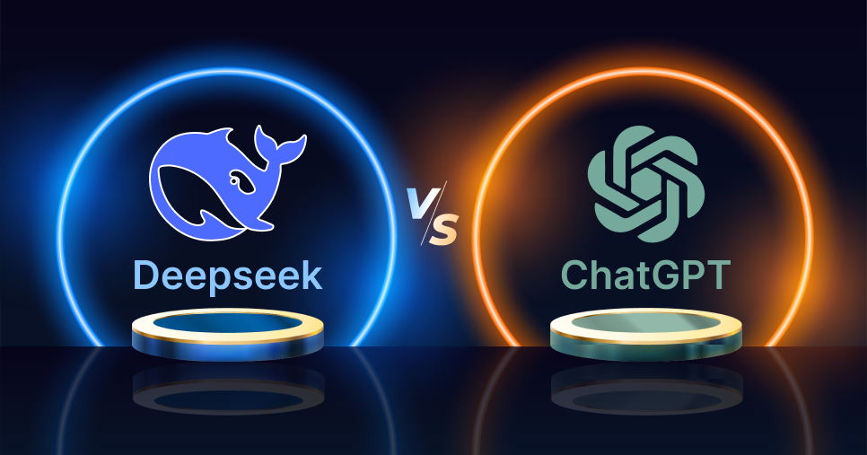

It’s no secret that artificial intelligence has turned into a revolution that is impacting almost every industry that you can think of. If you’ve been paying attention to the news or the internet lately you probably searched DeepSeek vs ChatGPT. However, if you’re completely new to the idea and want to learn more about it, AI is essentially technology that mimics human intelligence so that we can use it to carry out tasks that are time consuming and repetitive which a human would have to do otherwise. The benefit with AI here is that it can perform tasks quickly and efficiently which frees up time for humans to do much more valuable tasks. For example if you have a business and you have to collect a large amount of information from websites you can use AI agent development to do it in a matter of minutes while a human could take several hours or days. AI can do more than just repetitive tasks; it can understand natural language, recognize patterns and solve complex problems.
Coming back to our conversation about DeepSeek vs ChatGPT, let's see how these two platforms are different and what similarities they have. More importantly why DeepSeek is talked about so much in recent times even when in an era where AI is everywhere.
DeepSeek is one of the AI development companies that hails from China and they have recently received a lot of attention from people all over the world because of their innovative approach to AI. The reason they have garnered so much attention is because of their AI model named DeepSeek-V3 which also works through a chatbot interface similar to ChatGPT. However, the reason why DeepSeek vs ChatGPT is a big discussion right now is because DeepSeek surpassed even ChatGPT as the number one rated app on the iOS app store in the US. And it did so in a very short period of time which is remarkable. The other thing to consider here is that DeepSeek’s performance in terms of answering questions, solving logic problems and writing computer programs have been on par with other chatbots in the market like ChatGPT and Gemini. But the biggest factor that set DeepSeek apart from the competition is that they achieved this using NVIDIA’s lower power H800 GPUs, with the training being done in 55 days, at a very low cost of under 6 million dollars. It is also noteworthy that the model also adopts an innovative approach to the technology which we will talk about in later parts of this blog.
A conversation about DeepSeek vs ChatGPT cannot be complete without understanding what ChatGPT is and how it works and why DeepSeek received so much attention even with big tech companies like OpenAI in the market spending millions of dollars on AI technology. We got ChatGPT back in November of 2022. The company behind ChatGPT is an American research organization named OpenAI which made headlines when they released their highly capable chatbot powered by their GPT-3.5 AI model. At the time ChatGPT created a revolution with its fast generation of text based responses and an AI model that is trained on vast amounts of data. This knowledge base along with the access through APIs meant that ChatGPT could be used by businesses to power their customer service operations, content creation and educational tools seamlessly with AI chatbot development. In the DeepSeek vs ChatGPT DeepSeek surpassed ChatGPT in popularity because it could do a lot of the tasks that ChatGPT could do but using much less resources and the fact that while ChatGPT is closed source DeepSeek is open source which meant that anyone could use and train their model without having to pay for any licensing fees.
Deepseek vs Chatgpt Detailed Information
DeepSeek was founded by a prominent figure in the AI space of China named Liang Wenfeng. The company made headlines with its advanced large language model DeepSeek-V3 with its ability to even rival larger companies like OpenAI and Google even though DeepSeek only spent under 6 million dollars to train the AI model. In the debate of DeepSeek vs ChatGPT DeepSeek has garnered a lot of attention because of their cost effective development and training process at a time when AI companies spend hundreds of millions of dollars for the same thing.

ChatGPT is very popular in the AI world and in general globally with millions of active users and businesses all over the world using the LLM for various purposes. The AI model was developed by OpenAI which is an American research organization and leader in AI consulting services that was co founded by tech mogul Elon Musk, Sam Altman, Greg Brcokman, Ily Sutskever, Wojciech Zaremba and John Schulman back in December of 2015. The organization was founded with the mission to ensure that AI benefits all of humanity.
One of the noteworthy aspects of the debate DeepSeek vs ChatGPT is where they are both located because for a long time Silicon Valley was the hub for the AI revolution with many startups launching innovative solutions. DeepSeek’s impact also communicates a shift from this because it was built and headquartered in China which makes it the biggest innovation in the tech ecosystem of China. On the other hand OpenAI which is the developer of ChatGPT is based in the heart of America’s tech space which is San Francisco, California. OpenAI has been a big name in Silicon Valley and has led the charge in AI so far.
One of the things that works in DeepSeek’s favor in the DeepSeek vs ChatGPT debate is that it was built rapidly and the entire model was built under a very short period with it achieving many significant milestones within this time. In fact by January 2025 the AI assistant built by DeepSeek which is powered by their DeepSeek-V3 model became the highest rated free application on the iOS App Store in the US. ChatGPT on the other hand being one of the leading AI assistants at the time was released by OpenAI back in 2022 which also followed continuous improvements since it was first launched by them and now it has many advanced features that can be used by businesses.
Deepseek vs Chatgpt Key Features
Now that we have explored the basic information about DeepSeek vs ChatGPT let’s find out what are their key features and differences.
DeepSeek makes use of their DeepSeek-V3 model which powers their virtual assistant chatbot and enables it to understand natural human language and handle human-like conversations. The model has proven to be highly capable considering how quickly it was developed and trained and is proficient in question answering, solving logic problems and writing computer programs. This has made it very lucrative to software engineers which is amplified by the fact that the AI model is open source. If that was not all, the AI model is considered to have performance that’s on par with leading AI chatbots in the market like OpenAI’s ChatGPT and Google’s Gemini.
ChatGPT is a very popular large language model which is built upon the GPT-3.5 architecture (now with the more advanced GPT-4o) and can generate text that is coherent and contextually relevant. The DeepSeek vs ChatGPT debate is so strong now because while ChatGPT provides a lot of features and capabilities it was built from the ground up by OpenAI over several years and spending hundreds of millions of dollars for training. The AI model is highly capable and excels in understanding the context of user inputs, maintaining conversational flow and providing responses across a wide range of different topics. Today ChatGPT has a host of different features and includes advanced technologies like voice input, image generation, document extraction and also allows you to train their AI model using APIs. However, one aspect that works against ChatGPT in the DeepSeek vs ChatGPT debate is that while ChatGPT is a paid tool DeepSeek which performs on par with it is open source and anyone can use the model and train the model without having to pay them any fees.
DeepSeek is quite ahead on this front because it distinguishes itself through its resource efficient approach. The company reportedly trained its AI model using approximately 2000 GPUs over the course of 55 days which cost them around 6 million dollars which considering their larger competitors is only a fraction of the amount it would typically take. The DeepSeek vs ChatGPT debate is further strengthened in the favor of DeepSeek because at the time of developing the AI model the United States had imposed sanctions on China preventing them from accessing Nvidia’s H100 advanced GPUs. This forced DeepSeek to train their AI model using Nvidia’s much less powerful H800 GPUs which also showcased that AI models can be trained using significantly less resources than what was thought to be possible.
That is not to say that ChatGPT is not capable of advanced features but when you compare DeepSeek vs ChatGPT the latter was built using way more resources, advanced GPUs and after spending hundreds of millions of dollars. One thing to note here is that ChatGPT was launched at a time when advanced large language models that were capable of human-like conversations were not around. OpenAI was a pioneer in the technology showing the world what AI can really do and how businesses can use the technology to their advantage. This took them years of research, hardwork and hours of training using vast datasets. While on the other hand DeepSeek came into the picture at a time when LLMs were already popular and any tools and resources were out there about the technology. However, in the debate of DeepSeek vs ChatGPT DeepSeek does deserve credit because their rapid development speed is truly remarkable and especially because of the fact that their AI model is open source.
DeepSeek really hits a home run when it comes to accessibility because the application is completely free and their AI model is also open source. So not only can users access their AI assistant free of cost they can use the DeepSeek-V3 AI model, train it with their own data and build advanced AI applications without having to worry about licensing costs. When you look at it from a global standpoint you can see why the DeepSeek vs ChatGPT conversation favors DeepSeek because developers can seamlessly integrate the AI model into their applications with zero redtape.
ChatGPT is not completely out of the picture because OpenAI does provide a free version of their AI assistant chatbot. Here you get free unlimited access to their GPT-3.5 AI model and limited access to their models GPT-4 and above. GPT-4o being the latest version of the model. ChatGPT development is also widely used by businesses and many of them have integrated the AI model into their workflows with solutions like customer support chatbots, content creation tools, educational chatbots and many more. However, when you look at the pricing difference between DeepSeek vs ChatGPT OpenAI does fall short because to many users around the world their subscription might seem expensive. We have to remember that ChatGPT and other LLMs are not just used by large scale businesses and startups alone. In fact many everyday professionals use the platform for their daily tasks and at costs starting at $20/month many users especially in lower income countries may find the platform quite expensive. While on the other hand they get just as good an experience with DeepSeek for free.
Deepseek vs Chatgpt Performance
This is where things get a little interesting and the results are surprising. When you look at the performance of DeepSeek vs ChatGPT DeepSeek actually outperforms ChatGPT in some respects. That is not to say that an average user will notice these differences. But let’s look at some performance stats from both platforms.
Since both AI models are highly capable it is not surprising that they have demonstrated notably well and have shown strength across multiple domains. For example when it comes to mathematics DeepSeek actually achieved a 90% accuracy rate which is more than ChatGPT which scored 83% in the advanced accuracy benchmarks. Another important area where you would use both these AI models is for coding. Here both DeepSeek vs ChatGPT performed extremely well with DeepSeek getting a 97% success rate when it comes to logic puzzles and top tier debugging while ChatGPT also performed on par with the model. Reasoning is an area where both these AI models work a little bit differently. DeepSeek employs a reinforcement learning driven step by step kind of an explanation whereas ChatGPT is more good with multi step problem solving.
Speed and efficiency is another area where both these platforms perform a little differently and by that I don’t mean better or worse. When it comes to practical application you will see that ChatGPT provides you with responses that are more detailed and structured while DeepSeek tends to provide answers that are more concise and to the point. This could mean that you can use ChatGPT for tasks that require a very in depth explanation in terms of the responses and DeepSeek can help you with tasks that are more straightforward in terms of the queries. This can be very beneficial for business use cases like for example customer support. If your customer support operations require you to guide your customers step by step through various processes then ChatGPT could provide better responses. However, if you need to provide users with specific and quick answers to their queries then DeepSeek could make the customer experience more seamless. In terms of speed both models perform well and can provide you with instant responses to your queries.
Deepseek vs Chatgpt Use Cases
The use cases are what we really care about because regardless of how flashy an AI model or virtual assistant might seem, they are only useful when you can use them in real world scenarios. In the case of DeepSeek and ChatGPT both AI models have been implemented in various industries and both models have shown great versatility and adaptability. Let’s look at both of them and see what they do best.
The major strength that users have found with DeepSeek vs ChatGPT is that it performs extremely well when it comes to coding. This is especially true in the case of rapid code generation and debugging where your goal is speed in development and bug fixing. Because of this many developers around the world have started using DeepSeek as part of their everyday workflows so they can get highly efficient coding assistance. This is because of DeepSeek’s capability to solve logic problems and write computer programs which could make DeepSeek development very popular moving forward.
While ChatGPT can generate code and help with debugging the major use cases that users have used ChatGPT for are customer service, content creation and education. ChatGPT’s biggest benefit when you look at DeepSeek vs ChatGPT is that it can handle human-like conversations which makes it great for customer service operations. You can create a chatbot and integrate ChatGPT APIs into it and your chatbot agent will be able to handle customer queries 24/7 while also understanding the context of your users conversations. OpenAI also provides API based training tools for their GPT models which means that you can train ChatGPT with data relevant to your business and it will be able to provide tailored responses to your customers. ChatGPT has also been used widely by users for content creation for this reason too and many people have even created automated systems using ChatGPT for creating their social media content without having to use a large team of copywriters to write the content.
Deepseek vs Chatgpt Cost and Accessibility
When it comes to accessibility and cost in the DeepSeek vs ChatGPT debate DeepSeek really gives ChatGPT a run for its money in quite a literal way. One major benefit is that their AI assistant is free and the underlying AI model is also open source which makes it accessible to a broader audience. However, it does more than just democratizing the AI model by giving access to more people. Since it is open source developers have unlimited access to the AI model and they can create new and innovative applications using DeepSeek without having to spend money on licensing or paying for API usage.
While ChatGPT is not behind on the accessibility in the DeepSeek vs ChatGPT conversion because OpenAI does have a free version of ChatGPT more specifically the GPT-3.5 model the more advanced models like GPT-4o are paid. Many people around the world may not be able to afford even the lowest tier of their subscription structure which starts at $20/month. That is not to say that GPT-3.5 is not powerful because in reality it is very powerful and most people will be able to use it without problems in their everyday workflows. But considering that DeepSeek provides their advanced mode DeepSeek-V3 completely open source it is possible that users may prefer using DeepSeek to ChatGPT as more and more advancements are added to the model.
Deepseek vs Chatgpt User Experience
When it comes to the user experience of the AI assistants both DeepSeek vs ChatGPT come with a similar chatbot interface that more people will recognize. If we dive deeper into this and go off of what users are saying about both these platforms you can see that DeepSeek is better at providing concise and efficient responses especially when it comes to technical tasks like code generation. If you’re looking for quick and easy responses to your problems where you don’t need a lot of explanation then DeepSeek should be a great choice for you. Although you could get elaborated responses from DeepSeek if you ask the chatbot for it.
On the other hand ChatGPT is known for generating more structured and detailed responses which makes it great for tasks where you need a lot of explanation. Educational platforms for example could make use of ChatGPT to create lesson plans, curriculums and personalized learning courses where you need to explain concepts deeply. Another example would be for customer support especially for product based businesses. In this case you could implement a chatbot, integrate ChatGPT into, train it with your own data and the chatbot can provide your customers with step by step explanations for how your product is used. When you look at DeepSeek vs ChatGPT ChatGPT is a bit more engaging for the users where you can have a complete conversation with the chatbot instead of just getting to the point responses.
Deepseek vs Chatgpt Strengths and Weaknesses
Now that we have looked at both of these amazing platforms in depth and how they fare among the AI trends let’s take an overview of what their strengths and weaknesses are.
- It provides the convenience of having a resource efficient development process which leads to lower operational costs .
- Very strong when it comes to doing technical tasks which particularly include coding and logic problem solving.
- Since it is open source it promotes accessibility and innovation.
- DeepSeek is great for generating to the point responses and not detailed ones which may be limiting for some users who need elaborate responses.
- Since it is extremely new the community support for when you need help could be limited.
- ChatGPT is very established and many businesses are using the technology in their everyday tasks which makes it tried and tested.
- It is suitable for a wide range of applications because of how detailed the responses are. This means that you can get the kind of responses you need with some prompt engineering.
- Since OpenAI is a large organization that does ongoing research ChatGPT gets regular updates and improvements.
- ChatGPT uses substantial resources which means that development and operational costs are going to be higher.
- May not be extremely good at producing responses that are rapid and concise.
Some Closing Arguments for DeepSeek vs ChatGPT
In our DeepSeek vs ChatGPT conversation both these AI models are highly capable and they offer unique advantages for users and businesses. We have to understand that the question is not about which AI model is the best for artificial intelligence development because like any other technology it’s not about using a single AI model for everything we need. Each model is suitable for specific tasks and while they can perform well on a variety of tasks engineers have to decide what their goals are and choose the AI model that best suits their use cases. DeepSeek as we have explored in our blog is great for technical tasks like coding and problem solving while ChatGPT is great for more generalized applications which may require elaborate responses. Ultimately, it's not about DeepSeek vs ChatGPT but about picking the right technology for your end users considering their needs, goals and preferred user experience.
Technical Architect
At Sparkout Tech Solutions, we believe in the power of collaboration. I take pride in fostering a team culture that encourages open communication, knowledge sharing, and continuous learning. In the ever-evolving tech landscape, I am committed to staying at the forefront of industry trends. This commitment allows us to deliver solutions that not only meet but exceed our clients' expectations